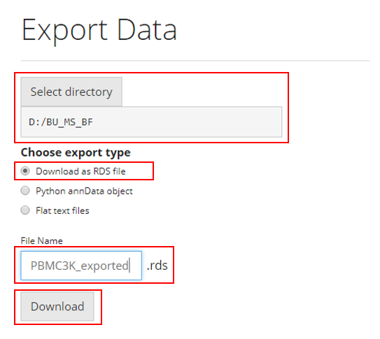
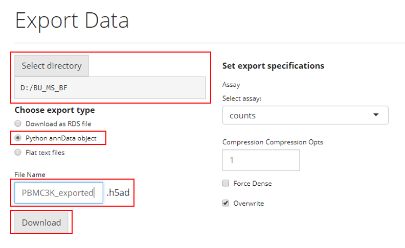

Introduction
Users can export/save their dataset after analyzing with SCTK, in three different formats:
- Save as SingleCellExperiment object, which can be used in R and analyzed with SCTK and many other choices of tools.
- Save as AnnData object, which is Python based, and can be analyzed with scanpy and many other choices of tools.
- Save as text files. The count matrices (assays), cell/feature annotation tables, dimension reduction matrices, feature subsets and metadata will be saved separately within a folder.
To view detailed instructions on how to export data, please select ‘Interactive Analysis’ for exporting through the shiny application or ‘Console Analysis’ for exporting through the R console from the tabs below:
Workflow Guide

To export data through the user-interface, users should open up the “Export Single Cell Data” tab as shown above.
Save as SingleCellExperiment (RDS file)

To save the analysis to RDS file, users need to:
- Select the path at “Select directory”
- Choose the option “Download as RDS file” from the radiobuttons
- Specify the file name at the text input “File Name”
- Click on “Download” button
Save as AnnData (H5AD file)

The simplest steps to save the analysis to AnnData format is similar as how users save an RDS file. To save the analysis to RDS file, users need to:
- Select the path at “Select directory”
- Choose the option “Python annData object” from the radiobuttons
- Specify the file name at the text input “File Name”
- Click on “Download” button
For Python’s AnnData object, there are a few more specifications.
- Unlike the data structure (SingleCellExperiment) that SCTK adopts, AnnData does not hold multiple assays at the same time. Users will need to make sure which assay should be the main count matrix to use, at the selection input “select assays.”
- Anndata offers the functionality to compress the saved file, so users can also choose to increase the compression level at the numeric input “Compression Opts”.
- Usually the specified main matrix will be saved as a sparse matrix, which saves a lot of computation memory. Users can also choose to save it as dense matrix by checking the option “Force Dense”.
- If “Overwrite” is checked, the exported file will be directly written to the specified path. If it is unchecked, the data will not be exported if a file with the same name and path already exists.
Save to flat files

Similarly,
- Select the path at “Select directory”
- Choose the option “Flat text files” from the radiobuttons
- Specify the file name at the text input “File prefix”
- Click on “Download” button
As mentioned at the beginning of the documentation, there will be several files for different information being saved. SCTK will create a directory under the path that users select at the first step, named by “File prefix,” all text files will be stored in this folder.
For additional specifications:
- If “Gzip Compress” is checked, each of the file will be compressed within the output folder.
- If “Overwrite” is checked, the exported file will be directly written to the specified path. If it is unchecked, the data will not be exported if a file with the same name and path already exists.
As how SCTK is designed, we assume users are attempting to save their data already in a SingleCellExperiment object:
Directly saving the object to RDS file
saveRDS(sce, "sce_exported.rds")Exporting to AnnData (H5AD file)
exportSCEtoAnnData(sce)Exporting to flat files
exportSCEtoFlatFile(sce)Exporting as Seurat object
exportSCEToSeurat(sce)For detailed specifications, please click on the function name and look at the reference page.